Graphing with ggplot2
Grayson White
Stat 241
Week 2 | Fall 2026
Announcements
- Office Hours Schedule is now posted on the course website.
- We will try to stick to this schedule, but if one of us has to reschedule, we will send a Slack message and update the schedule.
- P-Set 0 due at 9am on WEDNESDAY (all other p-sets will be due on Thursdays).
Week 2 Goals
Mon Lecture
Basics of
ggplot2Explore several
geoms.And a little data wrangling with
dplyras needed!
Wed Lecture
- GitHub workflow overview
- Graphing context!
- Labels
- Highlighting
- Useful text
- Look at more
geoms. - Explore further customizations.
- Color
- Themes
- Learn how to ask coding questions well.
Recall: The Grammar of Graphics
data: dataset that contains the data
geom: geometric shape that the data are mapped to
- point, line, bar, text, …
aesthetic: visual properties of the geom
- x position, y position, color, fill, shape
coord: coordinate system
- Cartesian, polar, geographic
scale: controls how data are mapped to the visual values of the aesthetic
- EX: particular colors, linear
guide: legend to help user convert visual display back to the data
ggplot2 example code
Example: Over the course of a year, how does the daily number of births vary?

- What patterns do you see?
Example
Example
Example: Cycles related to day of the week?
Rows: 365
Columns: 8
$ date <date> 2015-01-01, 2015-01-02, 2015-01-03, 2015-01-04, 2015-01-…
$ births <dbl> 8068, 10850, 8328, 7065, 11892, 12425, 12141, 12094, 1186…
$ wday <ord> Thu, Fri, Sat, Sun, Mon, Tue, Wed, Thu, Fri, Sat, Sun, Mo…
$ year <dbl> 2015, 2015, 2015, 2015, 2015, 2015, 2015, 2015, 2015, 201…
$ month <dbl> 1, 1, 1, 1, 1, 1, 1, 1, 1, 1, 1, 1, 1, 1, 1, 1, 1, 1, 1, …
$ day_of_year <int> 1, 2, 3, 4, 5, 6, 7, 8, 9, 10, 11, 12, 13, 14, 15, 16, 17…
$ day_of_month <dbl> 1, 2, 3, 4, 5, 6, 7, 8, 9, 10, 11, 12, 13, 14, 15, 16, 17…
$ day_of_week <dbl> 5, 6, 7, 1, 2, 3, 4, 5, 6, 7, 1, 2, 3, 4, 5, 6, 7, 1, 2, …Example: Cycles related to day of the week?
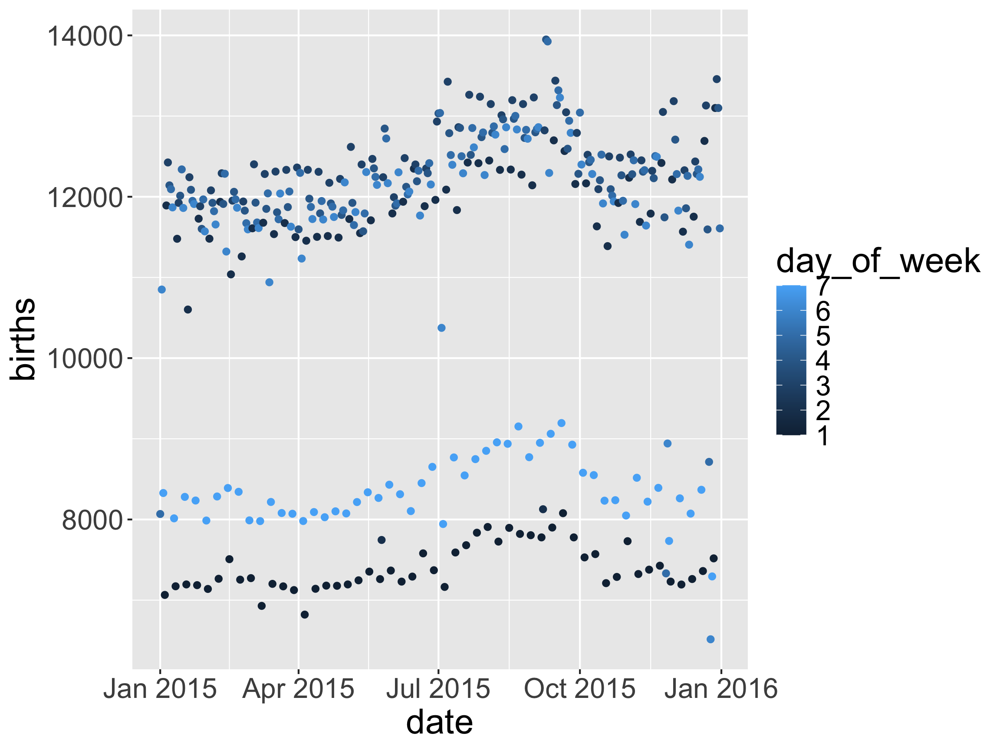
- Additional aesthetic:
- Why is this not quite what we want? What do we want?
- What happened to the aspect ratio when we added the legend?
Example: Cycles related to day of the week?
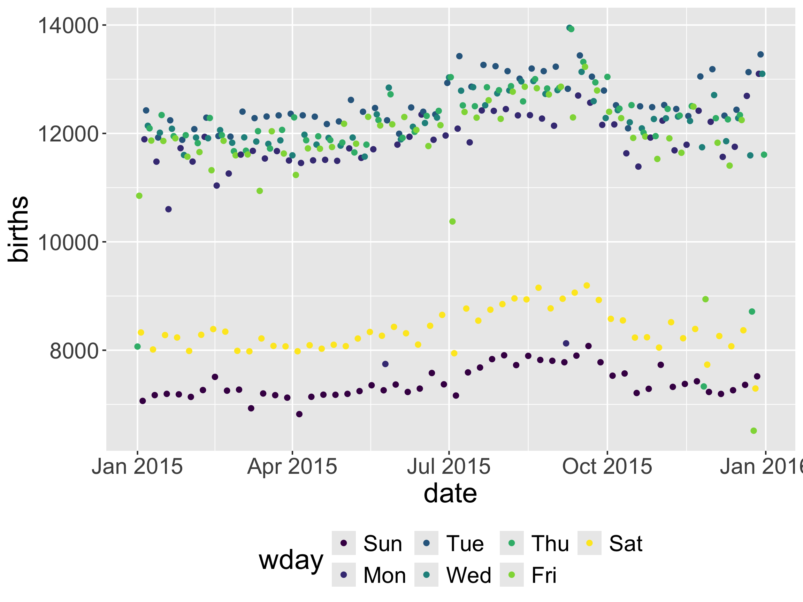
Positioning the legend on the bottom of the graph helped give us a nicer aspect ratio.
What if we want to see the direction that the number of births take over time for each day of the week?
- New visual cue/
geom?
- New visual cue/
Example
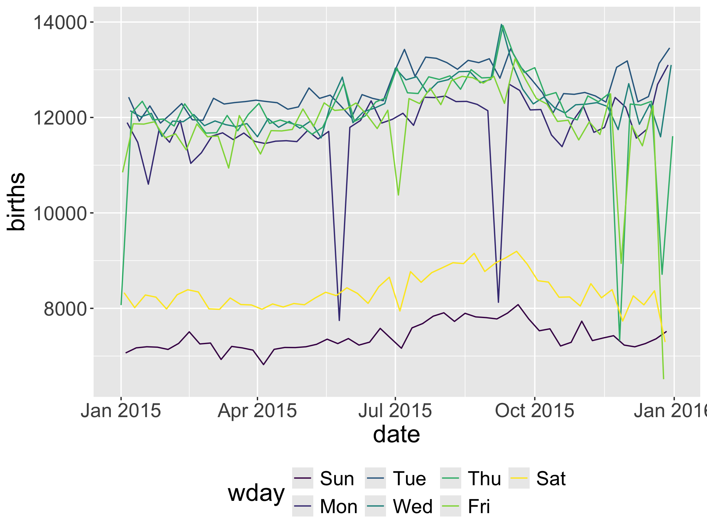
- What if we want visual cues for both position and direction?
Example
Coordinate System Layer
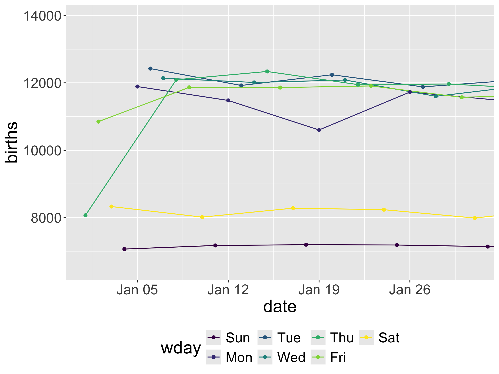
How did this new layer change our plot?
What if we want all the points to be colored “midnightblue”?
Setting instead of Mapping
Setting instead of Mapping
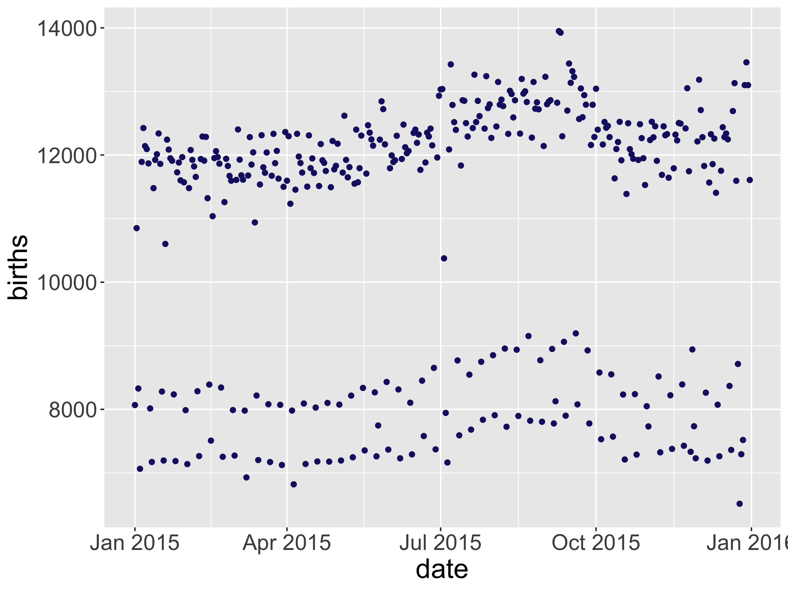
- If you want to set an aesthetic to a specific value (instead of mapping the aesthetic to a variable), do so in the
geom_--()function.
Layer order (sometimes) matters
Layer order (sometimes) matters
Layer order (sometimes) matters
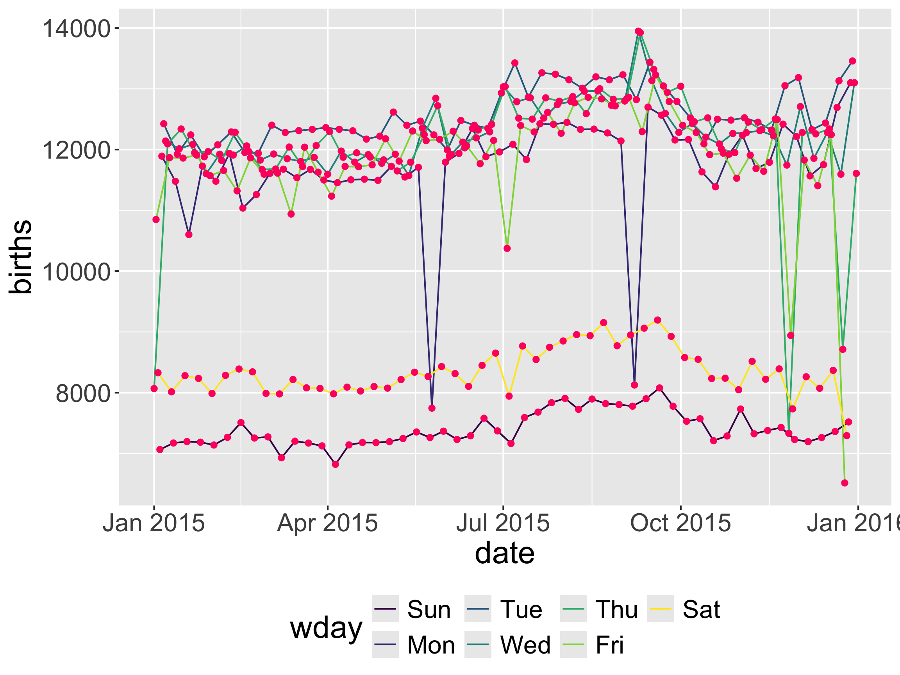
- Inheriting aesthetics discussion.
Let’s explore other geoms
- Many are listed on the first page of the
ggplot2cheatsheet.
- Can also ask R:
[1] "geom_abline" "geom_area" "geom_bar"
[4] "geom_bin_2d" "geom_bin2d" "geom_blank"
[7] "geom_boxplot" "geom_col" "geom_contour"
[10] "geom_contour_filled" "geom_count" "geom_crossbar"
[13] "geom_curve" "geom_density" "geom_density_2d"
[16] "geom_density_2d_filled" "geom_density2d" "geom_density2d_filled"
[19] "geom_dotplot" "geom_errorbar" "geom_errorbarh"
[22] "geom_freqpoly" "geom_function" "geom_hex"
[25] "geom_histogram" "geom_hline" "geom_jitter"
[28] "geom_label" "geom_line" "geom_linerange"
[31] "geom_map" "geom_path" "geom_point"
[34] "geom_pointrange" "geom_polygon" "geom_qq"
[37] "geom_qq_line" "geom_quantile" "geom_raster"
[40] "geom_rect" "geom_ribbon" "geom_rug"
[43] "geom_segment" "geom_sf" "geom_sf_label"
[46] "geom_sf_text" "geom_smooth" "geom_spoke"
[49] "geom_step" "geom_text" "geom_tile"
[52] "geom_violin" "geom_vline" "get_geom_defaults"
[55] "reset_geom_defaults" "update_geom_defaults" Adding Curve(s)
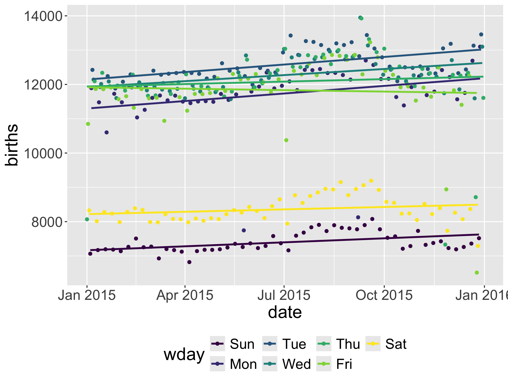
- Does a multiple linear regression line(s) capture the trend?
Adding Curve(s)
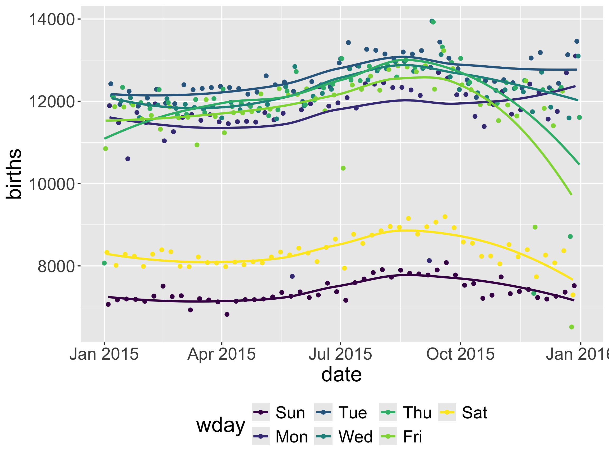
- The default LOESS smoother usually does a reasonable job.
Adding Curve(s)
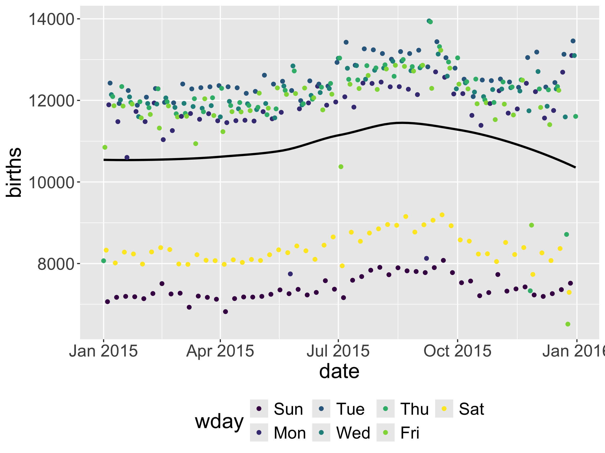
What happened?
Inheriting aesthetics discussion.
New Example: Movies and the Bechdel Test
- Need a new dataset with more categorical variables
- The Alison Bechdel Test: A movie passes the test if:
- There are at least two named women in the picture
- They have a conversation with each other at some point
- That conversation isn’t about a male character
New Example: Movies and the Bechdel Test
Rows: 1,549
Columns: 34
$ year <dbl> 2013, 2013, 2013, 2013, 2013, 2013, 2013, 2013, 2013, 20…
$ imdb <chr> "tt2024544", "tt1272878", "tt0453562", "tt1335975", "tt1…
$ title <chr> "12 Years a Slave", "2 Guns", "42", "47 Ronin", "A Good …
$ test <chr> "notalk-disagree", "notalk", "men", "men", "notalk", "ok…
$ clean_test <chr> "notalk", "notalk", "men", "men", "notalk", "ok", "ok", …
$ binary <chr> "FAIL", "FAIL", "FAIL", "FAIL", "FAIL", "PASS", "PASS", …
$ budget <dbl> 2.00e+07, 6.10e+07, 4.00e+07, 2.25e+08, 9.20e+07, 1.20e+…
$ domgross <chr> "53107035", "75612460", "95020213", "38362475", "6734919…
$ intgross <chr> "158607035", "132493015", "95020213", "145803842", "3042…
$ code <chr> "2013FAIL", "2013FAIL", "2013FAIL", "2013FAIL", "2013FAI…
$ budget_2013 <dbl> 2.00e+07, 6.10e+07, 4.00e+07, 2.25e+08, 9.20e+07, 1.20e+…
$ domgross_2013 <chr> "53107035", "75612460", "95020213", "38362475", "6734919…
$ intgross_2013 <chr> "158607035", "132493015", "95020213", "145803842", "3042…
$ period_code <dbl> 1, 1, 1, 1, 1, 1, 1, 1, 1, 1, 1, 1, 1, 1, 1, 1, 1, 1, 1,…
$ decade_code <dbl> 1, 1, 1, 1, 1, 1, 1, 1, 1, 1, 1, 1, 1, 1, 1, 1, 1, 1, 1,…
$ imdb_id <chr> "2024544", "1272878", "0453562", "1335975", "1606378", "…
$ plot <chr> "In the antebellum United States, Solomon Northup, a fre…
$ rated <chr> "R", "R", "PG-13", "PG-13", "R", "R", "PG-13", "PG-13", …
$ response <lgl> TRUE, TRUE, TRUE, TRUE, TRUE, TRUE, TRUE, TRUE, TRUE, TR…
$ language <chr> "English", "English, Spanish", "English", "English, Japa…
$ country <chr> "USA, UK", "USA", "USA", "USA", "USA", "UK", "USA", "USA…
$ writer <chr> "John Ridley (screenplay), Solomon Northup (based on \"T…
$ metascore <dbl> 97, 55, 62, 29, 28, 55, 48, 33, 90, 58, 52, 78, 83, 53, …
$ imdb_rating <dbl> 8.3, 6.8, 7.6, 6.6, 5.4, 7.8, 5.7, 5.0, 7.5, 7.4, 6.2, 7…
$ director <chr> "Steve McQueen", "Baltasar Kormákur", "Brian Helgeland",…
$ released <chr> "08 Nov 2013", "02 Aug 2013", "12 Apr 2013", "25 Dec 201…
$ actors <chr> "Chiwetel Ejiofor, Dwight Henry, Dickie Gravois, Bryan B…
$ genre <chr> "Biography, Drama, History", "Action, Comedy, Crime", "B…
$ awards <chr> "Won 3 Oscars. Another 131 wins & 137 nominations.", "1 …
$ runtime <chr> "134 min", "109 min", "128 min", "118 min", "98 min", "1…
$ type <chr> "movie", "movie", "movie", "movie", "movie", "movie", "m…
$ poster <chr> "http://ia.media-imdb.com/images/M/MV5BMjExMTEzODkyN15BM…
$ imdb_votes <dbl> 143446, 87301, 43608, 25735, 123837, 85871, 18973, 10826…
$ error <lgl> NA, NA, NA, NA, NA, NA, NA, NA, NA, NA, NA, NA, NA, NA, …What are useful geoms for describing amounts/frequencies?
Amounts: geom_bar
- Verbalize the mapping of data to geom_bar().
- How is this mapping different from geom_point()?
Another option: geom_col
geom_point again
- If you are worried about the data-ink ratio…
geom_point + geom_segment
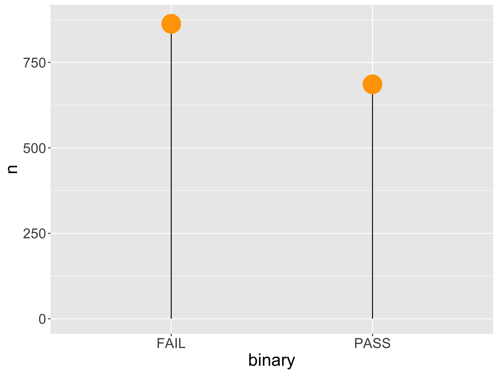
- Lollipop chart: compromise?
Two categorical variables: geom_bar
- Describe the mapping.
Two categorical variables: geom_bar
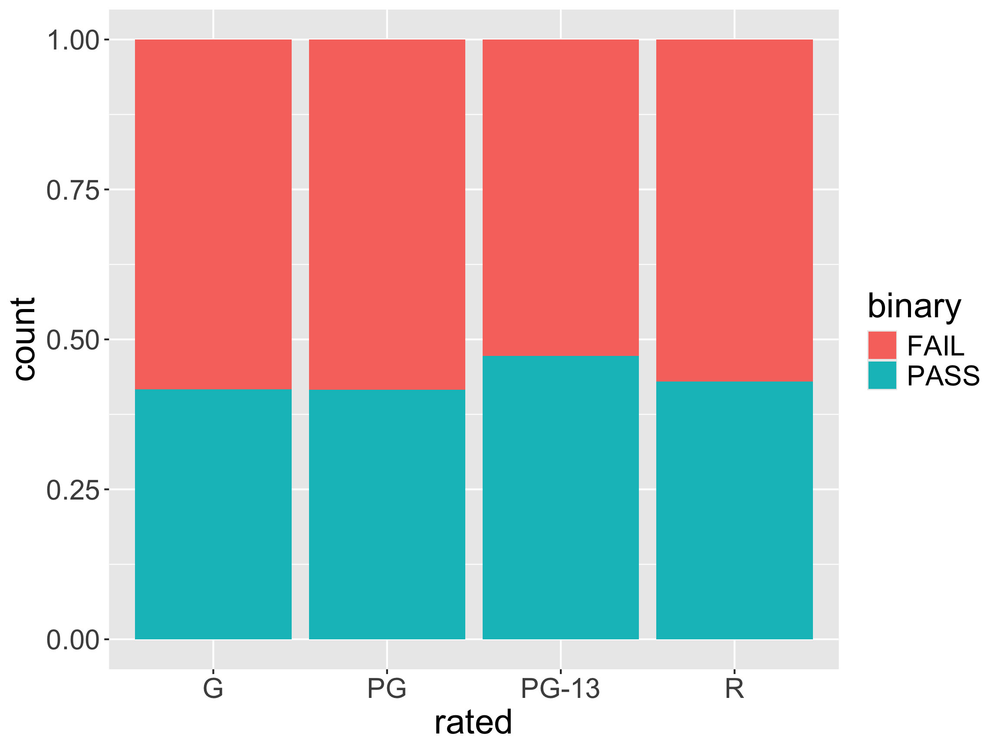
- Describe the mapping.
Two categorical variables: geom_bar
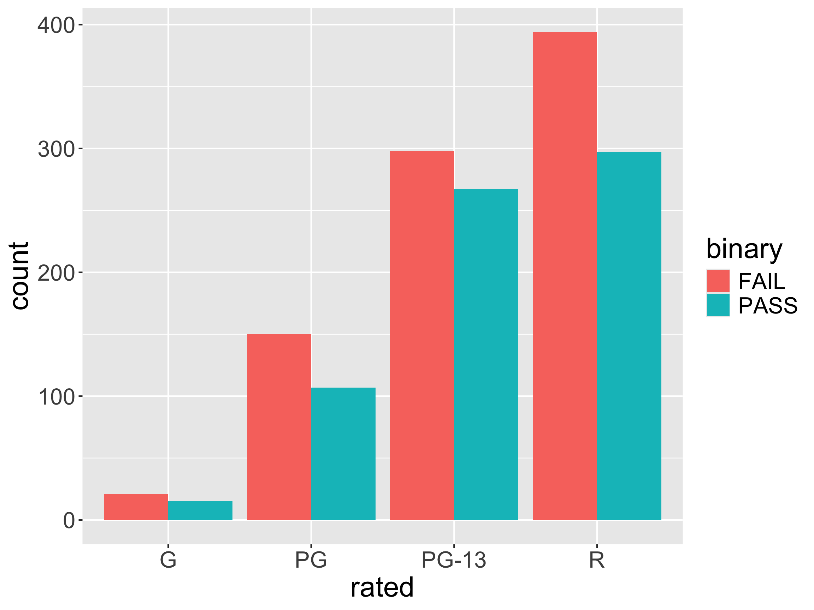
- Describe the mapping.
Two categorical variables: geom_tile
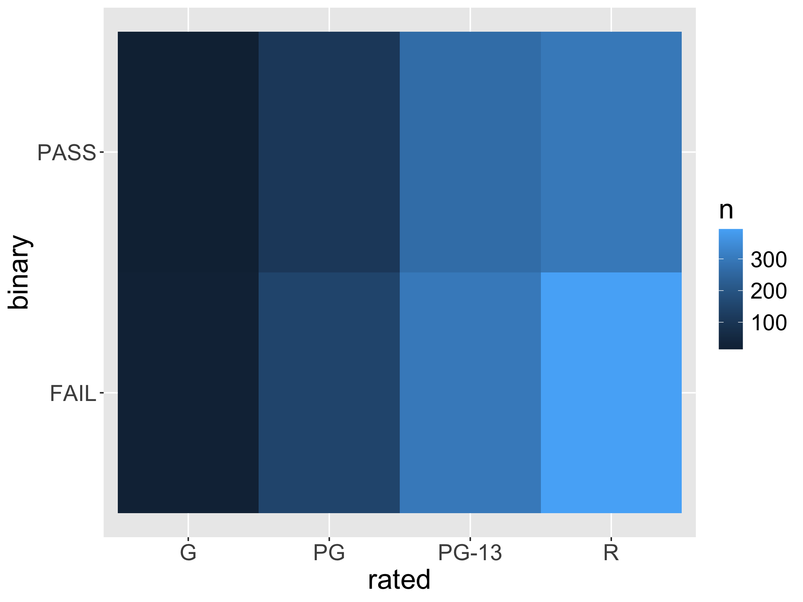
- Describe the mapping.
Two categorical variables: geom_tile
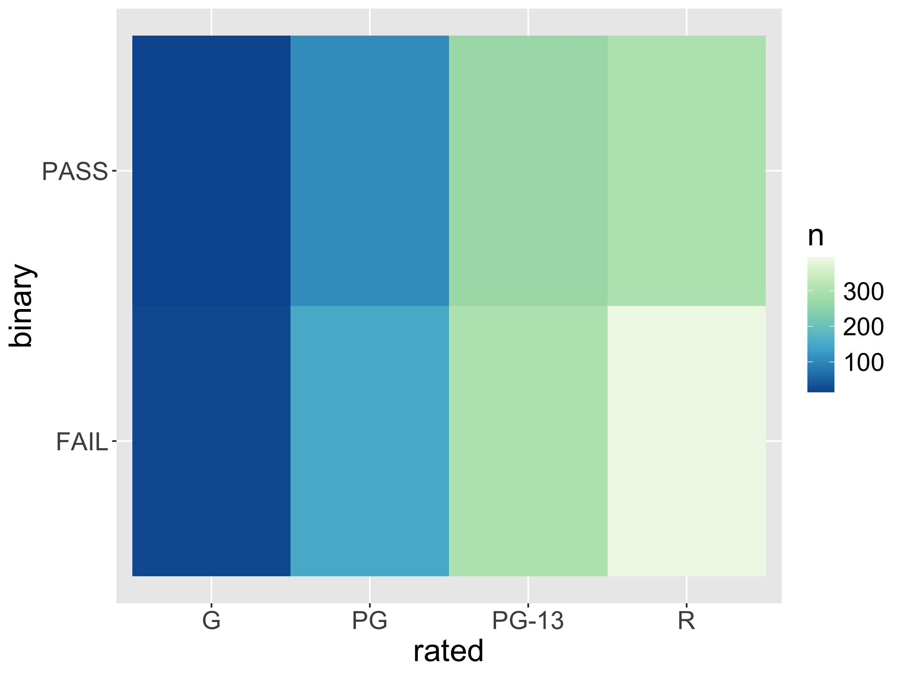
- Change the
fillscale!
Can display more than frequencies!
Can display more than frequencies!
options(scipen = 999) # turn off scientific notation
movies_ag <- group_by(movies,
rated, binary) %>%
summarize(mean_budget = mean(budget))
ggplot(data = movies_ag,
mapping = aes(x = rated,
y = binary,
fill = mean_budget)) +
geom_tile() +
scale_fill_viridis_c(direction = -1,
guide = guide_colorbar(angle = 90)) +
theme(legend.position = "bottom")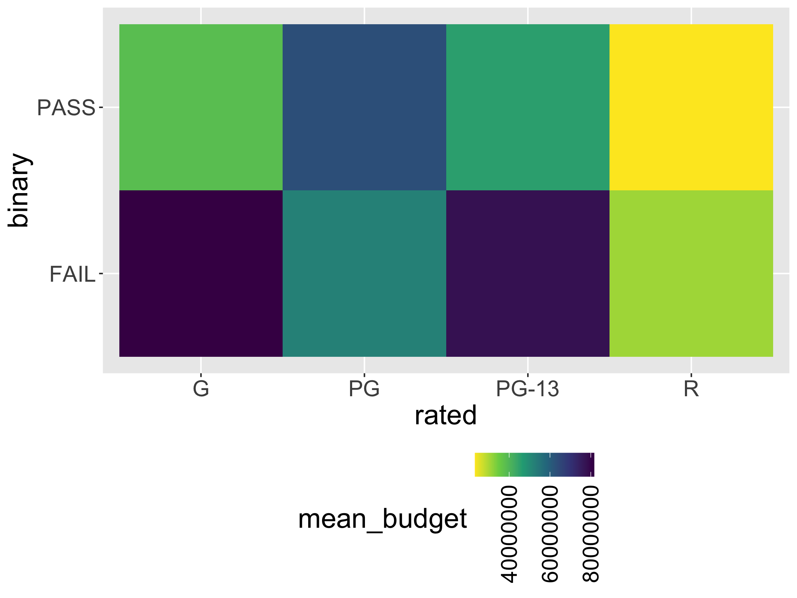
What are useful geoms (graphs) for visualizing distributions?
Distributions: geom_histogram
- Describe the mapping.
Distributions: geom_histogram
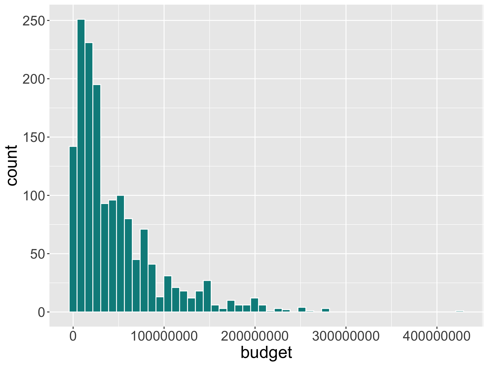
- Can modify the mapping via the
binwidthorbinsarguments
Distributions: geom_histogram
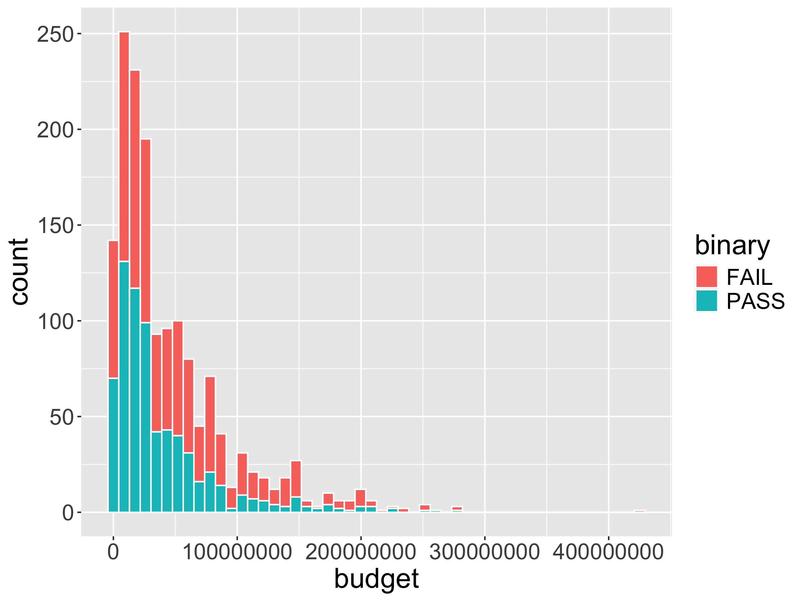
- What is problematic about this graph?
Distributions: geom_histogram
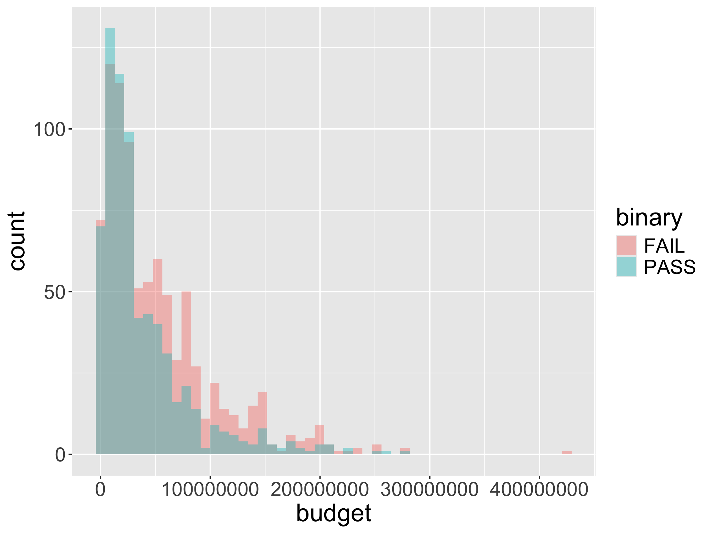
- Still problematic.
One option: Faceting
One option: Faceting
Another option: geom_density
Distributions: geom_boxplot
Distributions: geom_boxplot
- What does
varwidthdo? - Why might we add
notch = TRUE?
Distributions: geom_boxplot
Distributions: geom_violin
- Utility of the violin over the box?
Distributions: geom_violin
Reminders
- Office Hours Schedule
- P-Set 1 released at 9am on Thursday.
- Will discuss how to access the p-sets through GitHub on Wednesday.